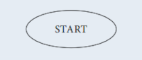
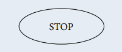
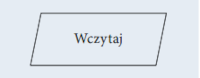
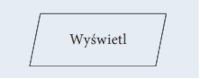
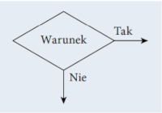
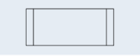
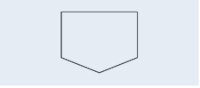

język programowania do tworzenia programów komputerowych, których zadaniem jest przetwarzanie danych, wykonywanie obliczeń i algorytmów. Może zawierać konstrukcje składniowe do manipulowania strukturami danych i zarządzania przepływem sterowania. Niektóre języki programowania mają specyfikację swojej składni i semantyki, inne zdefiniowane są jedynie przez oficjalne implementacje.
elementy języka:
Składnia— zbiór reguł opisujących sposób definiowania struktur danych, rodzaje dostępnych słów kluczowych i symboli oraz zasady, według których symbole mogą być łączone w większe struktury
Semantyka— zbiór reguł definiujących znaczenie słów kluczowych i symboli oraz ich funkcji w programie
Typy danych— dostępne typy danych, ich właściwości oraz operacje, które mogą być wykonane na wartościach danego typu.
Paradygmaty programowania opisują między innymi programowanie:
Skrypt to napisany w języku skryptowym program, który jest wykonywany wewnątrz aplikacji.
Język skryptowy to język programowania służący do wykonywania wyspecjalizowanych czynności. Języki skryptowe są tworzone z myślą o interakcji z użytkownikiem. Często są wykorzystywane do zadań administracyjnych. Bywają również osadzane w programach w celu zautomatyzowania powtarzających się czynności. Są używane do tworzenia dynamicznych stron internetowych. Stosowane w grach komputerowych służą do sterowania przebiegiem gry.
Algorytm to zestaw ściśle określonych czynności prowadzących do wykonania pewnego zadania. Określa sposób rozwiązania problemu i ma zastosowanie w różnych dziedzinach. Języki programowania to narzędzia, które bardzo dobrze nadają się do zapisu algorytmów. Aby napisać dobry program komputerowy, należy opracować skuteczny algorytm i zdefiniować dla niego odpowiednie struktury danych.
| Symbol | Opis |
|---|---|
|  | Początek algorytmu, start programu. Od tego miejsca rozpoczyna się wykonywanie operacji. |
|  | Koniec algorytmu, zakończenie programu. W tym miejscu następuje zakończenie wykonywania operacji. |
| Połączenie między blokami. Wskazuje kolejność wykonywania operacji. | |
| Wykonanie operacji, blok obliczeniowy. Wewnątrz tego symbolu znajdują się operacje do wykonania. | |
|  | Wprowadzanie danych. Wewnątrz tego symbolu określamy dane wejściowe, które muszą zostać wczytane |
|  | Wyprowadzanie danych. Wewnątrz tego symbolu określamy dane wyjściowe, które powinny zostać wyprowadzone jako wynik. |
|  | Warunek logiczny, blok decyzyjny. Umożliwia tworzenie rozgałęzień w algorytmie. Jeżeli warunek jest spełniony, to następuje przejście do gałęzi oznaczonej „Tak”, w przeciwnym razie następuje przejście do gałęzi oznaczonej „Nie”. |
|  | Proces wstępnie zdefiniowany. Symbol ten oznacza dołączenie podprogramu |
| Łącznik. Odwołanie na stronie. Służy do oznaczenia miejsc łączenia schematu, na przykład gdyby linie łączące na schemacie musiały się krzyżować. | |
|  | Łącznik międzystronicowy. Służy do oznaczenia miejsc łączenia schematu, gdy nie mieści się on na jednej stronie. |